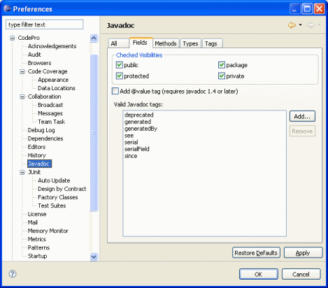
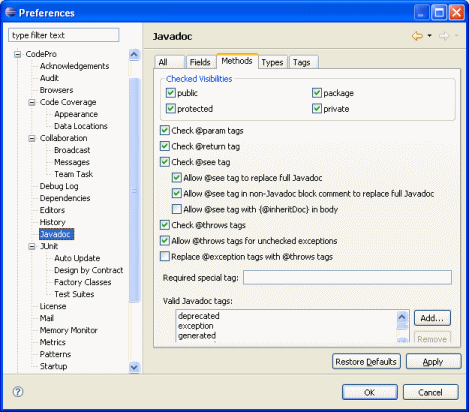
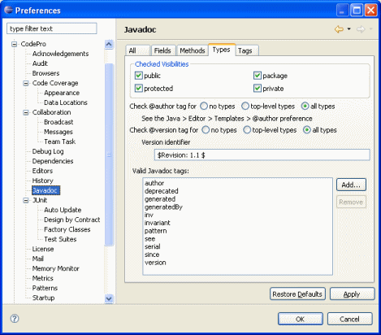
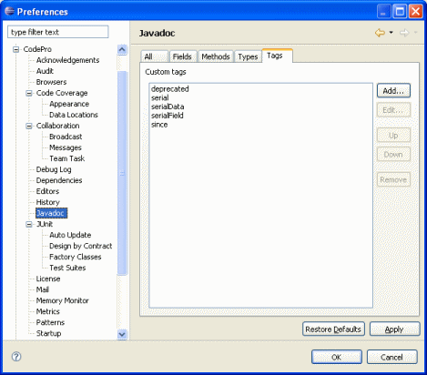

Preferences - Javadoc

When the menu item  "Repair Javadoc" is chosen, the javadoc repair engine is run.
"Repair Javadoc" is chosen, the javadoc repair engine is run.
This computes missing javadoc comments as well as corrections and improvements to existing
ones, and
displays these in a javadoc comparison editor.
Note that when the javadoc repair tool is invoked from an audit violation
resolution, the javadoc
audit rule settings will override the preferences set here.
The javadoc repair options are grouped according to the Java program elements they affect:
All
Include '*' column at left of comments
This option determines whether an asterisk will be used to start each line in the comment. (All javadoc comments must start with "/**" and end with "*/", but the lines in between do not need to start with a '*', although by convention they do.)
Indentation inside comments (typically a single space)
This option determines what characters are used to indent lines inside a comment (after the '*' if there is one). Typically, this is a single space.
Use qualified type names in method comments
This option determines whether qualified type names will be used in @param and @see tags. By default, unqualified type names are used.
Generate an empty comment even if no tags are generated
This option determines whether an empty comment will be generated for Java program elements even if no tags are generated. (This arises with fields and simple zero-argument methods returning void.)
Show the original code on the left and the modified on the right
This option causes the original and modified panes in the Javadoc editor to be transposed, so that the original code is shown on the left and the modified code is shown on the right.
Save only manually edited files in response to File>Save
This option causes the File>Save command in the Javadoc editor to save only manually edited files. Otherwise, all files in the editor are saved.
Ignore javadoc-related audit disable directives
This option causes audit disable directives related to javadoc (for example, "// $codepro.audit.disable methodJavadoc") to be ignored. When not ignored, such directives inhibit javadoc repair suggestions for the associated Java entity.
Make suggestions based on javadoc-related audit rules instead
This option causes the preferences in this dialog to be ignored. Instead, the javadoc-related audit rules in the audit rule set specified in the drop-down list are used to make suggestions regarding javadoc repairs.
Fields

Checked Visibility
Only Java program elements with the specified visibility are checked by the javadoc clean-up engine. For example, if the "private" box is left unchecked, then private methods (or fields or types) are not checked by the engine.
Add @values tag (requires javadoc 1.4 or later)
The user can select whether to insert a @value tag into the javadoc comment of final static fields. Final static fields have a fixed value. This option requires a JSDK1.4 (or later) version of the javadoc tool be used to generate the javadoc pages.
Valid Javadoc tags
The user can enter a list of tags that are valid for field Javadoc. Only tags that appear on this list are considered valid. Any other tags will be removed by the Javadoc Repair tool. The Add button adds a tag and the Remove button removes a tag from the list.
Methods

Checked Visibility
Only Java program elements with the specified visibility are checked by the javadoc clean-up engine. For example, if the "private" box is left unchecked, then private methods (or fields or types) are not checked by the engine.
Check @param tags
The user can select whether the @param tags are checked. If this option is selected, then the engine will check that there is a @param tag for every parameter and that there are no additional @param tags.
Check @return tag
The user can select whether the @return tag is checked. If this option is selected, then the engine will check that there is a @return tag if, and only if, the method has a return type other than void. It will also check that there is some text following the @return tag.
Check @see tag
The user can select whether the @see tag is checked. If this option is selected, then the engine will check that there is a @see tag for every method defined by an implemented interface.
Allow @see tag to replace full Javadoc
The user can select whether comments with a single @see tag
are allowed, as long as that @see refers to a method with the
same name and parameter types as the one being described. Note that other
tags are allowed except for @param,
@return, and @throws,
since these may conflict with the method signature given by the @see tag.
Allow @see tag in non-Javadoc block comment to replace full Javadoc
The user can select whether non-Javadoc block comments ("/* ...
*/") with a single @see tag are
allowed.
Check @throws tags
The user can select whether the @throws tags are checked. If this option is selected, then the engine will check that there is a @throws tag for every checked exception that is thrown by the method.
Allow @throws tags for unchecked exceptions
The user can select whether @throws tags are allowed to be included for exceptions that are not explicitly declared for the method. The typical case is a desire to document some unchecked exceptions that can be thrown, hence the name of the option.
Replace @exception tags with @throws tags
The user can choose to replace existing @exception tags, which are deprecated, with equivalent @throws tags.
Required special tag
The user can enter the name of a special tag that must be present for Javadoc checking to occur.Valid Javadoc tags
The user can enter a list of tags that are valid for method Javadoc. Only tags that appear on this list are considered valid. Any other tags will be removed by the Javadoc Repair tool. The Add button adds a tag and the Remove button removes a tag from the list.
Types

Checked Visibility
Only Java program elements with the specified visibility are checked by the javadoc clean-up engine. For example, if the "private" box is left unchecked, then private methods (or fields or types) are not checked by the engine.
Check @author tag
The user can select whether the @author tags are checked. If this option is selected, then the engine will check that there is an @author tag for every type (or only for top-level types). If the @author tag is missing, it will be added based on the contents of the @author template (see the Java > Editor > Templaes > @author preference).
Check @version tag
The user can select whether the @version tags are checked. If this option is selected, then the engine will check that there is an @version tag for every type (or only for top-level types). If the @version tag is missing, it will be added based on the contents of the "Version Identifier" field.
Valid Javadoc tags
The user can enter a list of tags that are valid for type Javadoc. Only tags that appear on this list are considered valid. Any other tags will be removed by the Javadoc Repair tool. The Add button adds a tag and the Remove button removes a tag from the list.
Tags

Custom tags
The user can enter a list of custom tags that will be placed at the end of the tag list and sorted in the order specified. This applies to field, method and type Javadoc. The Add button adds a new tag; the Edit button edits an existing tag in the list; the Up button moves a tag up in the list; the Down button moves a tag down in the list; and the Remove button removes a tag from the list.